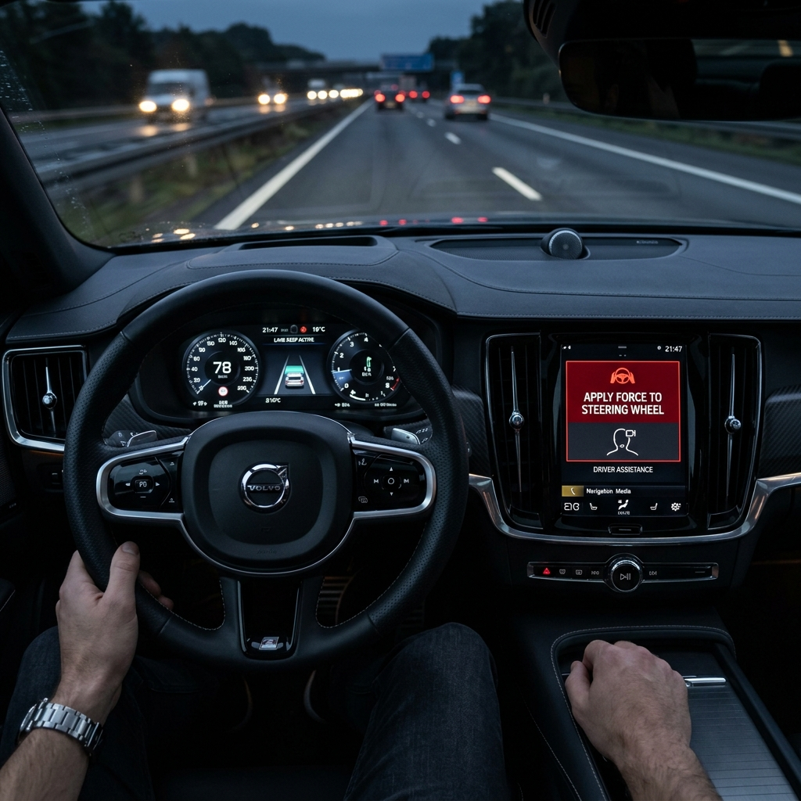
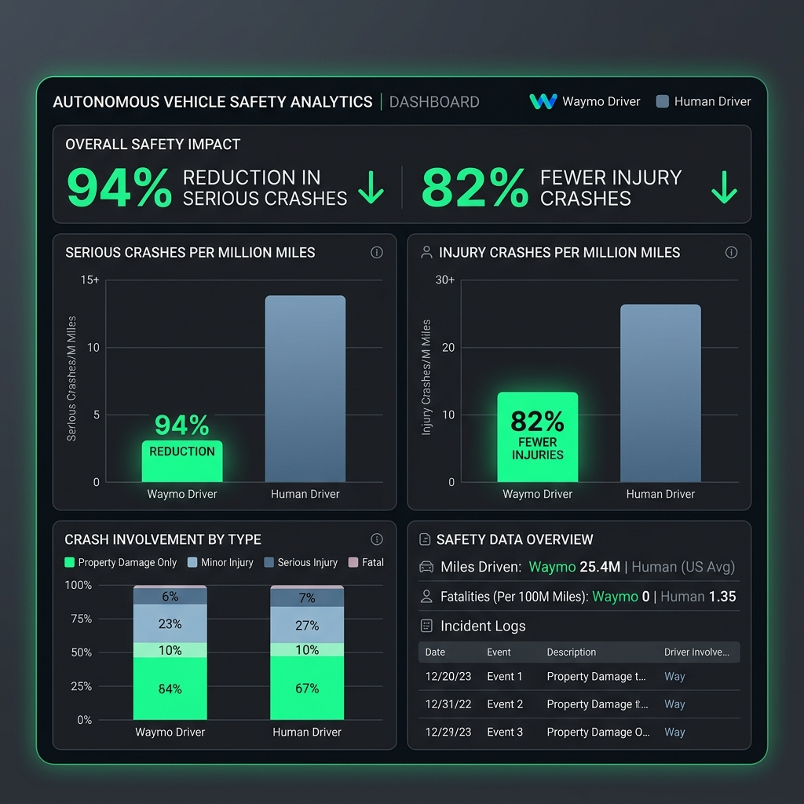

Chủ đề: AI Ethics & Safety
Ngành Mobility / Autonomous Driving thuộc nhóm rủi ro Critical vì mọi lỗi của hệ thống đều tương tác trực tiếp với môi trường vật lý thế giới thật.
| Câu hỏi rủi ro | Đánh giá | Vì sao? |
|---|---|---|
| Gây hại thể chất khi AI lỗi? | Critical | Gây tai nạn va chạm đường bộ, chấn thương hoặc tử vong. |
| Ảnh hưởng quyết định hệ trọng? | Critical | Trực tiếp phanh, đánh lái, giữ làn, phản xạ vật cản. |
| Mức độ nghiêm trọng của hậu quả? | Critical | Mất mát về người không thể đảo ngược được. |
| Blast radius khi mở rộng? | High | Lỗi cập nhật phần mềm ảnh hưởng lập tức đến hàng triệu xe. |
Xe thử nghiệm tự hành đâm tử vong người đi bộ băng qua đường ngoài vạch tại Arizona. Cảm biến đã phát hiện trước 5.6 giây nhưng liên tục phân loại sai đối tượng.
Escalation & Safety Culture failure. Hệ thống phanh tự động của xe bị tắt để tránh giật cục khi thử nghiệm; việc giám sát dựa hoàn toàn vào người lái dự phòng.
Gây thương vong vật lý trực tiếp. Việc đưa hệ thống chưa kiểm chứng đầy đủ ra đường công cộng là rủi ro quản trị cực lớn.


Rủi ro trong ngành Xe tự hành không nằm riêng lẻ ở thuật toán nhận diện (perception) hay lập trình mà là sự kết hợp của toàn bộ hệ thống:
Lỗi phần mềm chuyển hóa trực tiếp thành tai nạn vật lý tức thì, tác động nghiêm trọng đến an toàn tính mạng con người.
Tài xế dễ rơi vào trạng thái mất cảnh giác (over-reliance). Nếu thiết kế giao diện (HMI) không tốt, việc bàn giao khẩn cấp (escalation) sẽ thất bại.
Điều kiện vận hành thiết kế (ODD) rất nhạy cảm với thời tiết, hạ tầng. Không thể lấy số liệu an toàn của vùng đô thị A để biện minh triển khai cho vùng đô thị B.
AI safety trong ngành Mobility đòi hỏi sự đánh giá toàn diện trên cả hệ thống HMI, quy trình kiểm soát rủi ro của tổ chức (Safety Culture), giới hạn hoạt động (ODD), dữ liệu so sánh thực nghiệm minh bạch và trách nhiệm pháp lý rõ ràng.